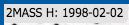
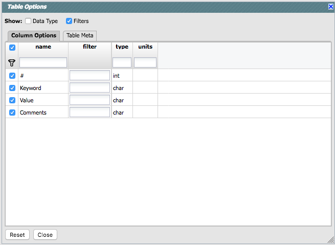
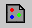
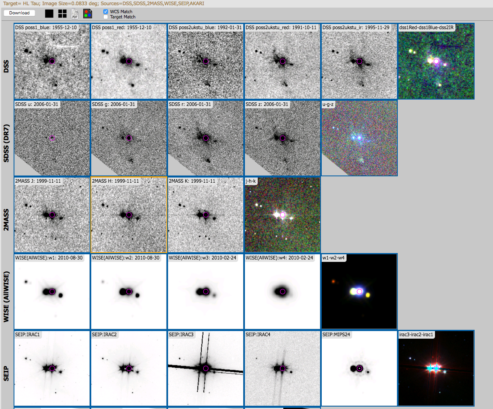
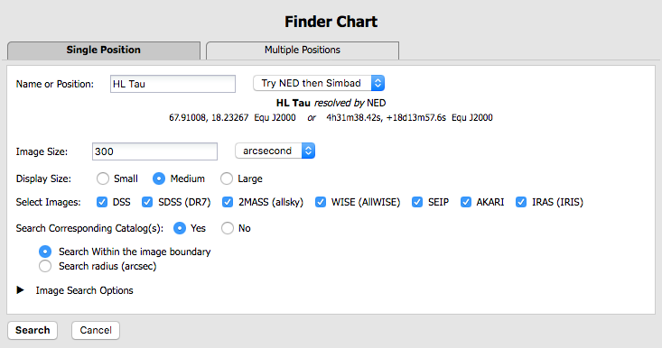
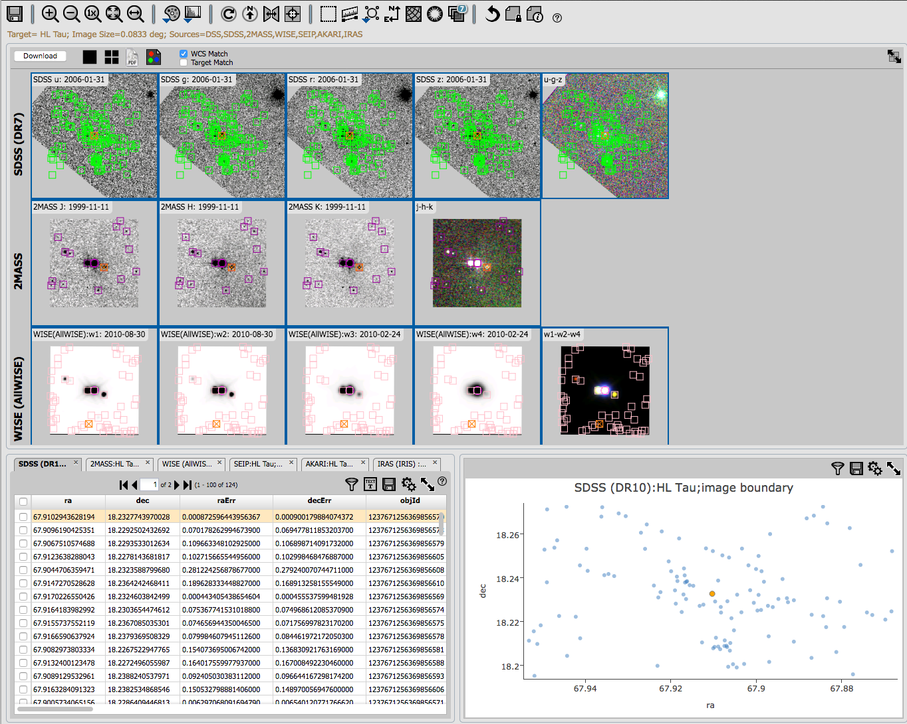
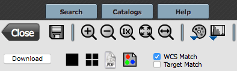
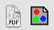

You can remove this (or
change its color) from the layers pop-up, described below.
You can remove this (or
change its color) from the layers pop-up, described below.Critical to many of the functions described in this visualization section is the concept of the "selected image." Finder Chart can return up to 34 images of the same patch of sky. Look at the array of images returned by a search. One (you may have to look for it) is "selected" -- it is outlined in orange. Click on a different image, and that image becomes outlined in orange as the selected image. By default, the Finder Chart images are locked together, so quite often what you do to one image is done to all the images. But certain other behaviors described here are still customized to each individual image. In order to affect a given image, you must select it.
Contents of page/chapter:
+FITS Viewer
+Image Information
+Image Toolbar
+Specific information on Color Stretches
+Footprints -- overlaying markers
+3-color images
+Catalogs and Layers
+Breaking out of the pane (and going back)
+World Coordinate System (WCS) Alignment
The orientation of the image is given with a compass rose on the right, next to a zoomed-in view of the image under your cursor. If you can't see all of these two displays, enlarge your browser window slightly.
 Example of image label.
The target on which you searched is overlaid on the main image with a
cross-hair marker: You can remove this (or
change its color) from the layers pop-up, described below.
Some information (like the title of the image) is also given in the interactive exploration region described immediately above. This region also includes additional information about the image (such as the pixel scale and orientation).

 Saving the image.
Saving the image.
You can save images as FITS, PNG, or regions files to your local disk.
Saved FITS images will not save the color stretches or overlays; it
will just save the underlying FITS image. Saved PNG files WILL
include any overlays or annotations you have placed on the image, but
will not include the underlying FITS image. Saved regions files will
not save the underlying image, but will just save the overlays as a
DS9 Regions file. See the DS9
website  for more
information on the syntax of these DS9 region files.
for more
information on the syntax of these DS9 region files.
Note that you can save the original or a cropped version of the
FITS file; see the select region icon below to crop, and then save the
FITS image. Be sure to save the cropped FITS image (see annotated
figure).

Note that if you overlay a catalog consisting of tens of thousands of sources, then turn around and save a regions file from the catalog overlay, then you will have fewer sources in the regions file than you have in the full catalog. This is a known issue.
The saved PNG is the same size as it is on your screen. If you want a big version, make the desired image big on your screen (view one-at-a-time) before saving the PNG.
 Zooming in or out.
Zooming in or out.
If you click zoom in or out rapidly, a pop-up window appears to allow
you to more rapidly select the zoom level you want. Select the desired
level, or click on the 'x' in the upper right to make the window
go away. Here is an example: 
Note that there is a maximum (or minimum) allowed zoom level. A notification will appear when you have reached the maximum (or minimum) allowed zoom level for a given image. To enlarge things more than that, please repeat your search to obtain new images with smaller (or larger) spatial extent.
 Zooming to a 1-to-1 size.
Zooming to a 1-to-1 size.
 Fit image to screen or fill
screen
Fit image to screen or fill
screen
By default, the images that are returned are frequently but not always centered on your search target. Clicking on these icons let you see the whole image that is returned, whether or not it is centered on your target.
 Changing the color table.
Changing the color table.

 Changing the color table
stretch.
Changing the color table
stretch.
 Rotating the image to any
angle
Rotating the image to any
angle

 Rotating the image so that North is
up.
Rotating the image so that North is
up.
 Flipping the image on the y-axis.
Flipping the image on the y-axis.
 Re-center the image.
Re-center the image.
 Selecting a region.
Selecting a region.
 These icons will allow you to (from
left to right):
These icons will allow you to (from
left to right):

 ). To clear the filters,
click on the cancel filters icon (which also appears after you impose
filters):
). To clear the filters,
click on the cancel filters icon (which also appears after you impose
filters):  . There is much more on filters in the tables
section.
. There is much more on filters in the tables
section.
Note that, if you have a rotated image such that
a crop would have to bisect pixels, it will show you the region that
encompasses your selection. If you crop at that point, then, it will
crop in image space (such that pixels are not bisected). See the
figure below -- in the original image, north is up. This has been
rotated 45 degrees. The selected region is in white. The yellow
dash-dot line is the crop in pixel space that encompasses the selected
region.

 Measuring a distance.
Measuring a distance.
 Put a marker on the image.
Put a marker on the image.

 . The dash-dot line around it means that it
is 'active', so you can move (click and drag the marker) or resize it
(click and drag the dash-dot boundary). You can change the color of
the marker (and change the label) via the "layers" icon (described
below). You can also remove this layer via the layers icon. There are
several additional options in the pulldown, enough that they have
their own section below.
. The dash-dot line around it means that it
is 'active', so you can move (click and drag the marker) or resize it
(click and drag the dash-dot boundary). You can change the color of
the marker (and change the label) via the "layers" icon (described
below). You can also remove this layer via the layers icon. There are
several additional options in the pulldown, enough that they have
their own section below.
 Show the directions of North and East
Show the directions of North and East
 Add a coordinate grid.
Add a coordinate grid.
 Read in a DS9 Regions file
Read in a DS9 Regions file
 Viewing/changing the layers on the
image.
Viewing/changing the layers on the
image.
Where it's possible to change colors of a layer, click on the 'colors'
link to be taken to a new pop-up from which you can select a new
color. For catalogs or the search target, you can also select the
symbol shape and size:

To
adjust the size, type in the symbol size in pixels or use the up/down
arrow keys to change the size by one pixel at a time. Click OK to
implement your choices. To delete a layer, click on "delete." Some
layers do not have that option; to remove that layer, click on the
corresponding icon from which you added that feature. Alternatively,
you can "show all" or "hide all" with the buttons on the lower left of
the pop-up window. To make this pop-up window go away, click on the
'x' in the upper right of the pop-up.
If you searched on catalogs from the front page, you may have an
intimidating number of layers right away. The interaction of the
selected image, the layers themselves, and the layers pop-up can be
very powerful but also very intimidating. This is discussed more
in the catalogs and layers section
below.
Further, you can click on the gears in the upper right of the window
to bring up a dialog box via which you can filter down the header
keywords (using the same syntax as the other filters):
 Restoring everything to the
defaults
Restoring everything to the
defaults
 Lock/unlock image color tables
and overlays
Lock/unlock image color tables
and overlays
 Lock/unlock images
Lock/unlock images

The first set of options aligns the images only once; the second set
of options makes the alignment persist ("lock") when you move the
images. You can align by the images' WCS (e.g., RA and Dec), by the
target, by the pixels according to the origin of the coordinate system
in the image header, or by the pixel at the image center. The most
common choice is likely the WCS align and lock. This is discussed in
more detail in the WCS section below.
 Viewing the FITS header.
Viewing the FITS header.


 Getting help.
Getting help.
This icon enables you to change the color
stretch of the displayed image. (This option is only available for
FITS, not HiPS, images.) When you click the button, a pull-down menu
appears with a variety of choices. You can choose from a set of
pre-selected options:

If you have a 3-color image, you can change the stretch in each color plane separately; select the tab at the top accordingly for red, green, or blue. By default, it stretches each band independently, and you can set the parameters in the stretch pop-up accordingly.

As described in Lupton et al. (2004)  , a different algorithm may be
useful for creating 3-band color images. Select "Hue preserving
stretch" to invoke this option. This stretch should be a
brightness-independent color-preserving asinh stretch, though in
practical terms, it seems to work best for optical images.
, a different algorithm may be
useful for creating 3-band color images. Select "Hue preserving
stretch" to invoke this option. This stretch should be a
brightness-independent color-preserving asinh stretch, though in
practical terms, it seems to work best for optical images.

It may be useful to scale individual channels; sliders allow you to do so. The Q parameter has another slider. For a linear stretch, Q=0; increase Q to change what features are emphasized. Pedestal values can also be set to allow the level assigned to "black" to change.
Footprints
The marker icon () has a pull-down menu with
several possible options:
Any
of the options with an arrow on the right can expand to additional
subsidiary choices, e.g.,:

We now describe these various footprints here.
For each of these choices, the markers appear initially in the center of the loaded images. The first mouse click you make in any of the images will move the marker to that location.
Each of these marker choices, when overlaid and/or selected as
'active', has a dot-dash square around it. If it is asymmetrical (most
of them are), it has an additional "appendage" and a red plus at the
center of the footprint:

These so-called "handles" allow you to resize and/or rotate the
marker, depending on the nature of the marker. These handles only
appear when the marker is selected as active; if you wait a few
seconds, they vanish.
Troubleshooting and Tips:
The first overlay choice (simply
called 'marker') is a red circle.
The remaining markers are all footprints from various telescopes:
Spitzer, SOFIA, HST, JWST, and Roman. HST, JWST and Roman are derived
from information provided via MAST (see http://gsss.stsci.edu/webservices/footprints/help.html
 .) For JWST and Roman in
particular, they are pre-launch values.
.) For JWST and Roman in
particular, they are pre-launch values.
 Spitzer/IRAC 3.6 and 4.5 micron
footprints. These two footprints are placed separately
from each other. The footprint can be moved or rotated. Click and drag
the center of the footprint. A circle appears with four small circles
("handles") around it. Grab and drag the small circles to rotate it,
or drag the big circle to move it. Change the color, delete, or add
more copies of the IRAC footprints from the layers pop-up.
Spitzer/IRAC 3.6 and 4.5 micron
footprints. These two footprints are placed separately
from each other. The footprint can be moved or rotated. Click and drag
the center of the footprint. A circle appears with four small circles
("handles") around it. Grab and drag the small circles to rotate it,
or drag the big circle to move it. Change the color, delete, or add
more copies of the IRAC footprints from the layers pop-up.
 SOFIA footprints.
Several different SOFIA footprints are available; the graphic here
shows a selection of them. The available footprints (all of which are
placed separately) are:
SOFIA footprints.
Several different SOFIA footprints are available; the graphic here
shows a selection of them. The available footprints (all of which are
placed separately) are:
 HST footprints. You can
overlay the whole focal plane footprint, shown here, or individual
instrument footprints (NICMOS, WFPC2, ACS/WFC, ACS/HRC, ACS/SBC,
WFC3/UVIS, and WFC3/IR). Consult the HST documentation
HST footprints. You can
overlay the whole focal plane footprint, shown here, or individual
instrument footprints (NICMOS, WFPC2, ACS/WFC, ACS/HRC, ACS/SBC,
WFC3/UVIS, and WFC3/IR). Consult the HST documentation  for specifics on which apertures are which. The
footprint can be moved or rotated. Click and drag the center of the
footprint. A circle appears with four small circles ("handles") around
it. Grab and drag the small circles to rotate it, or drag the big
circle to move it. Note that if you overlay the
footprint on a very small image, nothing will appear to have happened.
You need at least a 45 arcmin image to comfortably see the footprint.
Change the color, delete, or add more copies of the HST footprints
from the layers pop-up.
for specifics on which apertures are which. The
footprint can be moved or rotated. Click and drag the center of the
footprint. A circle appears with four small circles ("handles") around
it. Grab and drag the small circles to rotate it, or drag the big
circle to move it. Note that if you overlay the
footprint on a very small image, nothing will appear to have happened.
You need at least a 45 arcmin image to comfortably see the footprint.
Change the color, delete, or add more copies of the HST footprints
from the layers pop-up.
 JWST footprints. You can
overlay the whole focal plane footprint, shown here, or individual
instrument footprints (FGS, MIRI, NIRCAM, NIS, and NIRSPEC).
Note that if you overlay the footprint on a very
small image, nothing will appear to have happened. You need at least a
30 arcmin image to comfortably see the entire JWST focal plane. Please
consult the JWST
documentation
JWST footprints. You can
overlay the whole focal plane footprint, shown here, or individual
instrument footprints (FGS, MIRI, NIRCAM, NIS, and NIRSPEC).
Note that if you overlay the footprint on a very
small image, nothing will appear to have happened. You need at least a
30 arcmin image to comfortably see the entire JWST focal plane. Please
consult the JWST
documentation  for details
about the footprints. In all cases, if the footprint is 'active', a
circle near the middle of the footprint will appear with four small
circles ("handles") around it. Grab and drag the small circles to
rotate it, or drag the big circle to move it. Change the color,
delete, or add more copies of the footprints from the layers
pop-up.
for details
about the footprints. In all cases, if the footprint is 'active', a
circle near the middle of the footprint will appear with four small
circles ("handles") around it. Grab and drag the small circles to
rotate it, or drag the big circle to move it. Change the color,
delete, or add more copies of the footprints from the layers
pop-up.
 Nancy Grace Roman Space Telescope
(WFIRST) focal plane footprint. As above, the footprint can
be moved or rotated. Click and drag the boresight (the cross hairs),
which appears by default to the upper right of the array of squares.
A circle appears, centered on the boresight, with four small circles
("handles") around it. Grab and drag the small circles to rotate it,
or drag the big circle to move it. Note that if you
overlay the footprint on a very small image, nothing will appear to
have happened. You need at least a 60 arcmin image to comfortably see
the footprint, and even then you will probably have to click and drag
to see the entire footprint. Consult the Roman
documentation
Nancy Grace Roman Space Telescope
(WFIRST) focal plane footprint. As above, the footprint can
be moved or rotated. Click and drag the boresight (the cross hairs),
which appears by default to the upper right of the array of squares.
A circle appears, centered on the boresight, with four small circles
("handles") around it. Grab and drag the small circles to rotate it,
or drag the big circle to move it. Note that if you
overlay the footprint on a very small image, nothing will appear to
have happened. You need at least a 60 arcmin image to comfortably see
the footprint, and even then you will probably have to click and drag
to see the entire footprint. Consult the Roman
documentation  for
specifics on the apertures. Change the color, delete, or add more
copies of the Roman footprint from the layers pop-up.
for
specifics on the apertures. Change the color, delete, or add more
copies of the Roman footprint from the layers pop-up.
3-color images
In Finder Chart, a default search results in images in many bands of
the same region of the sky. It can be useful to create 3-color images
from these multi-color bands.
The images window pane consists of rows of images grouped by survey.
Near the top left of the images window pane, you can find this icon:
. If you click on this icon, at the end
of each row, a 3-color image appears that has been created out of the
bands going into that survey. Here is an example for HL Tau:

At the end of each set of survey images is a new, 3-color image. This
image has been automatically generated with pre-selected bands as the
color planes:
| survey | red | green | blue |
|---|---|---|---|
| DSS | DSS 2 IR | DSS 2 red | DSS 2 Blue |
| SDSS | z | r | u |
| 2MASS | K | H | J |
| WISE | W3 | W2 | W1 |
| Spitzer/SEIP | I3 | I2 | I1 |
| AKARI | WideL (140 um) | WideS (90 um) | n60 (65 um) |
| IRAS | IRAS-60 | IRAS-25 | IRAS-12 |
The "3-color" button is "sticky" in that if you turn it on, and then do another search, the new search will automatically make 3-color images.
To save the color PNGs, you can do either of the following: (1) Click on the image to select it (make it outlined in orange). Click on the diskette icon in the far left of the image toolbar. Select "png" for the file type to save, and click 'download.' (2) Click on the "download" button in the far upper left of the images window pane. Click on "include color images" in the download options pop-up and save as PNGs.
Catalogs and Layers
If you search on catalogs from the search results page, then Finder
Chart will overlay these catalogs on your images as additional layers.
In order to see the layers on any given image, you need to click on
the layers icon () in the image toolbox
(described above). See both the Tables
section and the Catalogs section for
much more information on tables and catalogs in general.
However, if you search on catalogs from the main search page, Finder Chart overlays the catalogs on your images right away, and it does so in a way that is quite powerful, but may be initially confusing. Critical to understanding what it is doing (and how you can change it) is the concept of the "selected image." Out of the potentially large number of images you have loaded, one is "selected" -- it is outlined in orange. Click on a different image, and that image becomes outlined in orange as the selected image. Different things are overlaid on different images (or image sets), so it is important to realize which image you have selected.
In order to explain what it is doing, let's look at a real example.
Search on "HL Tau" and ask it to retrieve catalogs within the image
boundary:

Here are the results obtained after a few seconds:

This is a single target search, so three panes are returned; one has the images (top), and the bottom has two panes, one with the catalogs and the other with the plots from the catalogs. The images have catalogs overlaid -- the DSS doesn't have a corresponding survey, so it has no catalog, but the SDSS images have the SDSS catalog overlaid, the 2MASS images have the 2MASS catalog overlaid, etc. for all the other surveys with catalogs. By selecting the 2MASS catalog tab on the bottom, and then selecting a row in the 2MASS catalog, that object is highlighted in the 2MASS image and the 2MASS catalog plot. It works the other way as well - select an object in the SDSS image or plot, and the object is highlighted in the 2MASS catalog. This behavior is identical to that for catalogs in general.
What is potentially confusing here is that the catalogs arrive with the search results and are already read in. From the main search page, you could conceivably stumble into having (1) nothing overlaid; (2) only the central source overlaid, so it looks like nothing is overlaid; (3) so many sources overlaid that you can't see the image. From the layers pop-up, you can control which of these loaded catalogs are shown on the selected image (and in which colors, and what symbol shape). But what is shown on what image is a strong function of which image you have selected.
Perhaps you are interested in whether the WISE catalog has counterparts to an object seen in the 2MASS images. Here is how you add the WISE catalog to the 2MASS images.
From the main search page, you can choose to search the catalogs just over a small radius, and/or further constrain it to just find the closest source (one-to-one match) to your target. If you do this, the overlays of the catalogs will (most likely) all be right on top of the same, single source, and it will be much less clear that the catalogs are overlaid at all, much less that the catalogs are different on each set of images. But, it is behaving in the same way as what is described here!
Helpful tip: If you leave the layers pop-up window open while you click on different images to select them, you can see the contents of the pop-up layers window change to reflect the layers (and options) present in that selected image.
Breaking out of the pane (and going back)
By default in Finder Chart, the screen is broken up into 1-4 panes.
The set of images corresponding to the target could be your only pane.
If you searched on a list of targets, the list is on the left. If you
searched on catalogs, the catalogs and plots are on the bottom. For
some purposes, it is useful to view the images (or the tables) as
large as possible. On the upper right of any pane, there is an expand
icon  . Clicking on it will expand
these tables into a larger window, taking up as much space in your
browser window as possible. On the upper right of the image pane,
there is this icon:
. Clicking on it will expand
these tables into a larger window, taking up as much space in your
browser window as possible. On the upper right of the image pane,
there is this icon:  , which
expands the window pane into a larger window, taking up as much space
in your browser window as possible, but still leaving the images in
tiled view.
, which
expands the window pane into a larger window, taking up as much space
in your browser window as possible, but still leaving the images in
tiled view.
There is a set of options just above the images, even when the images
pane is smaller (and the catalogs/plots/other targets are visible):

The large "Close" arrow at the upper left is always available in the
expanded views, and enables you to return back
to the pane view.
The "Prepare Download" button packages up your data so you can download it.
There is a cluster of icons  that
portray (in icon form) the different views you can have of the images
you have loaded. The first icon (the big square) denotes "show one
image at a time." The second icon (the cluster of four squares)
denotes "show smaller images of all the images I have loaded, but
still take up the whole browser window with the set" (as opposed to
going back to the window panes).
that
portray (in icon form) the different views you can have of the images
you have loaded. The first icon (the big square) denotes "show one
image at a time." The second icon (the cluster of four squares)
denotes "show smaller images of all the images I have loaded, but
still take up the whole browser window with the set" (as opposed to
going back to the window panes).
If you are viewing one image at a
time, the arrows allow you to click through your set of images in
the order they are loaded.

These next two icons will generate a
PDF and turn on the 3-color images,
respectively.
World Coordinate System (WCS) Alignment and Related
Features
As described above, there are two different lock buttons on the image
toolbar, one () for the color
table/stretch/overlays, and another, different one () for WCS matching. This section describes
the image locking in more detail.
The main purpose of having lock buttons at all is to make it easier to change color tables for everything at once, or to zoom/scroll all the images at once.
To use either of the locking buttons: Select an image by clicking on it; note that your selected image is outlined in orange. Lock by color and then change the color table in that selected image; all the images change color tables. Lock by position and all the images align to the same scale as your selected image.
Aligning images by position on the sky is likely to be the most common use of locking. You can align FITS and HiPS images to each other. When you have locked the images, if you zoom, click-and-drag, etc., then all the images move together. This option only makes sense if all of your loaded images are of the same region of sky, which they are when using Finder Chart. (In other IRSA tools, it's quite possible to have images loaded from many different targets.) There may be situations where you likely you don't want all of the displayed bands to change together, which is why locking by position of any sort is an option distinct from locking color tables.
When aligning images, you can specify how the images align and for
how long. Clicking the lock images icon produces this pull-down
menu:
The first set of options aligns the images only once; the second set of options makes the alignment persist ("lock") when you move the images.
You can align by the images' WCS (world coordinate system, e.g., RA and Dec), by the target (align by target on the screen, regardless of position in the sky), by the pixels according to the origin of the coordinate system in the image header, or by the pixel at the image center. The most common choice is likely the WCS align and lock.
Here are examples of different alignments, left to right: align by
WCS, by pixel origin, and by pixel at image centers.


Note that aligning by WCS puts North up, and aligned so that each image has the same angular scale.
In contrast, here is an align by target - several different spiral
galaxies, but the target used for each image is in the center of each
image tile.

To remove an image (or catalog) entirely, click on the small 'x' in the upper right of the image in the tiled view, or on the small 'x' in the corner of the image (or catalog) tab in the window pane view.